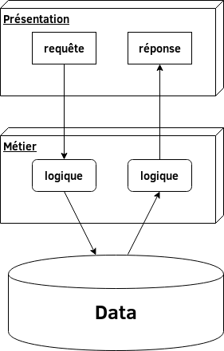
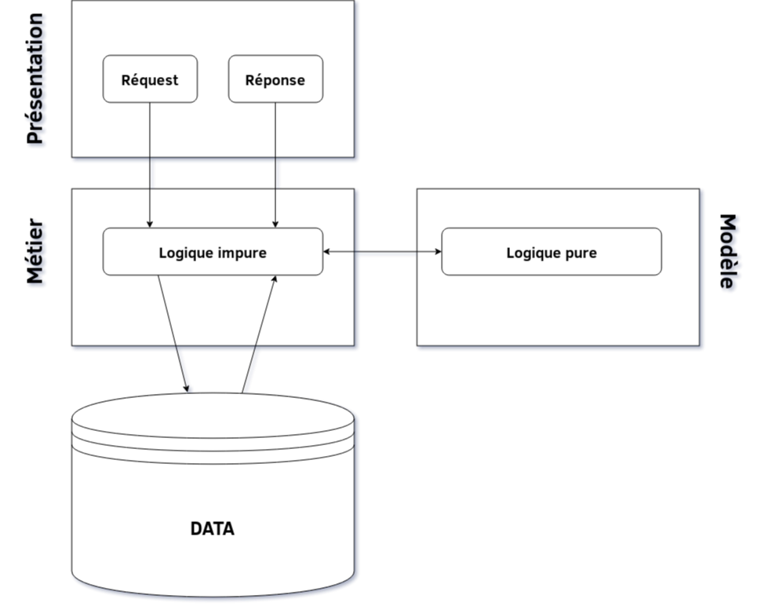
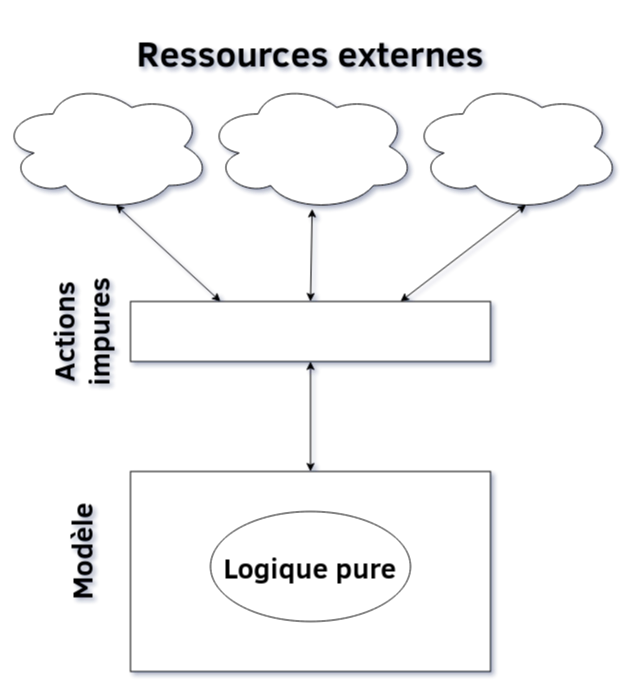

Propre à la Vérité à l'orbe pur
Immuabilité et pureté dans la programmation fonctionnelle
Auteur Andrea Cesaro, powered by: Reveal.js
Résumé de la présentation
- Pourquoi l'immuabilité ?
- Immuabilité dans la programmation impérative
- Immuabilité pragmatique
- Immuabilité dans la programmation fonctionnelle
- La pureté
Pourquoi l'immuabilité ?
Simplicité dans le raisonnement
Page page = repo.getPageById(id);
...
Integer numLines = page.getNumLines();
Simplicité dans le partage entre procedures
Page page = repo.getPageById(id);
...
Page engPage = GoogleTranslateUtils.translate(page);
Simplicité dans le partage entre threads
Les variables en seule lecture n'ont pas besoin des synchronisation
Immuabilité dans la programmation impérative
Dans une procédure linéaire
Une nouvelle valeur est créée à chaque étape
Book correctWord(Book oldBook, Integer index,
Word oldWord, Word newWord){
Page oldPage = oldBook.getPageByIndex(index);
Page newPage = oldPage.changeWord(oldWord,newWord);
Book newBook = oldBook.changePageAtIndex(newPage,index);
return newBook;
}
Book correctWord(Book oldBook, Integer index,
Word oldWord, Word newWord){
return oldBook.getPageByIndex(index)
.changeWord(oldWord,newWord)
.changePageAtIndex(newPage,index);
}
Dans une instruction conditionnelle
À chacun if correspond un else
Integer numPages(Book book, Boolean withIndex){
Integer result;
if(withIndex){
result = book.getNumPages() + book.getIndex().size();
} else {
result = book.getNumPages();
}
return result;
}
Dans une boucle
Nous ne pouvons pas ! Les boucles sont liées à la mutabilité
...
while(mutableCondiction){
...
}
... Dans les structures de données
Rendre un objet immutable c'est difficile
Copier simplement une grande collection peut être très lourd
Immuabilité pragmatique
Dans une boucle
Utiliser des variables temporaires pour les mutations, dans la plus petite scope possible
...
Integer maxNumPageTemp = 0;
for(Book book:books){
if(book.getNumPage() > maxNumPageTemp){
maxNumPageTemp = book.getNumPage();
}
}
Integer maxNumPage = maxNumPageTemp;
...
...
Integer maxNumPage = extractMaxNumPage(books);
...
Si possible utiliser des API fonctionnelles
Ils cachent l'implémentation mutable et ils donnent des interfaces trés flexibles
...
Integer maxNumPage = books.stream()
.map(Book::getNumPage)
.max((x,y) -> x < y)
.orElse(0);
...
Dans le cas d'un objet (Java/C#)
- Definir les champs comment private et final
- Ne definir pas des methodes set
- Definir la classe comment final
- Copie défensive entrée et sortie
Dans le cas d'une collection
- Il exist des versions de collections immutables, elles ont des propriétés différentes des collections mutables
Les logiciels de gestion de versions, comme git sont des collections immutables
- La strategie d'evaluations des expressions-λ peut etre utilisé pour optimiser le code (graphe orienté acyclique)
Les Stream en Java pour exemple
Immuabilité dans la programmation fonctionnelle
Un peu plus d'histoire
- (∼1930) Alonzo Church introduit le λ-Calculus
- (∼1930) Alan Turing introduit la Machine de Turing
- (∼1930) Kurt Gödel et Jacques Herbrand introduit le functions μ-recursives
- (∼1936) Alonzo Church et Alan Turing prouvent l'équivalence des trois théories
La recursion peut étre utilisé au lieu des boucles
Integer factorial(Integer n){
Integer result=1;
if(n>1){
for(int i=1;i<=n;i++){
result=result*i;
}
}
return result;
}
Integer factorial(Integer n){
if(n>1) return n*factorial(n-1);
else return 1;
}
Quel est le problème de la recursion ?
Integer infinite(){
if(true) return infinite();
else return 0;
}
Exception in thread "main" java.lang.StackOverflowError
Tail recursion
Chaque fonction récursive peut étre transformé dans une forme dit tail recursive
Les ccompilateurs / interpréteurs des langages fonctionnelles implémentent la tail recursive optimisation
Immutabilité
Par default ou tres simple à realiser
case class Book(title: String, pageNumber: Int = 0){
def desc(): String = s"The book $book has $pageNumber pages"
}
Il permet d'avoir du filtrage par motif (pattern matching)
La pureté
Exemple
Architecture en couches
Exemple
Séparation pur / impur
Exemple
"Architecture" centré sur la logique
